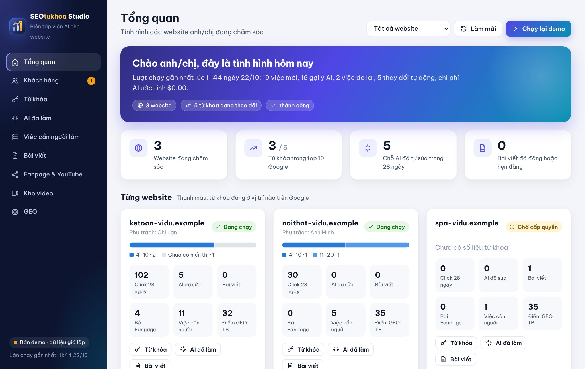
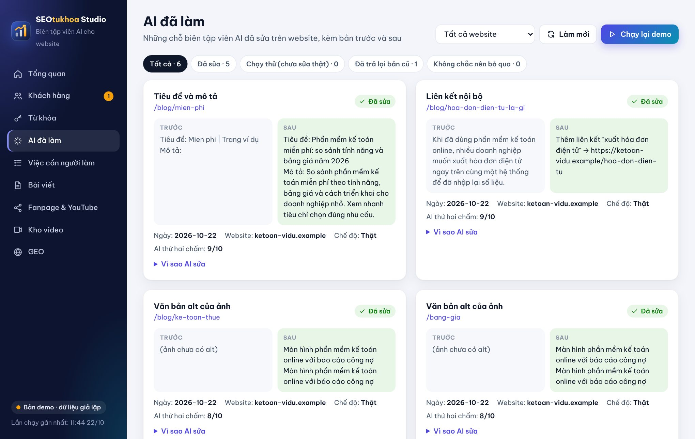
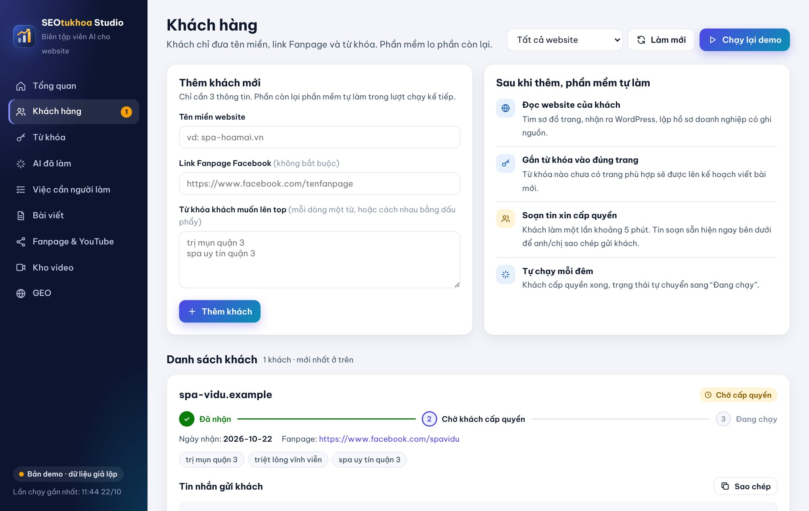
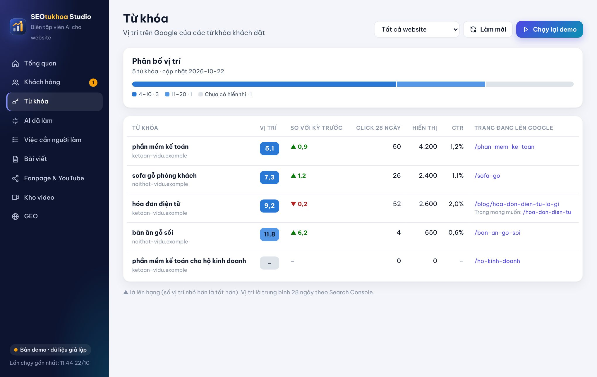
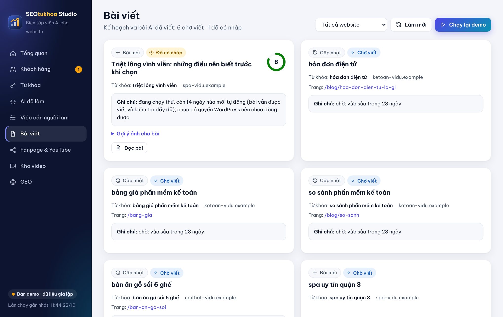
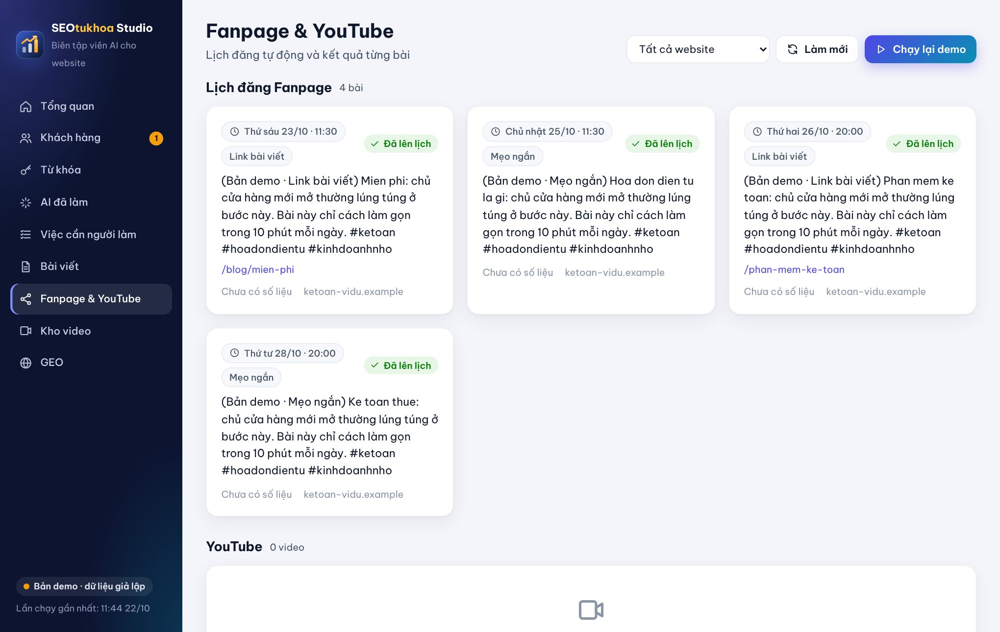
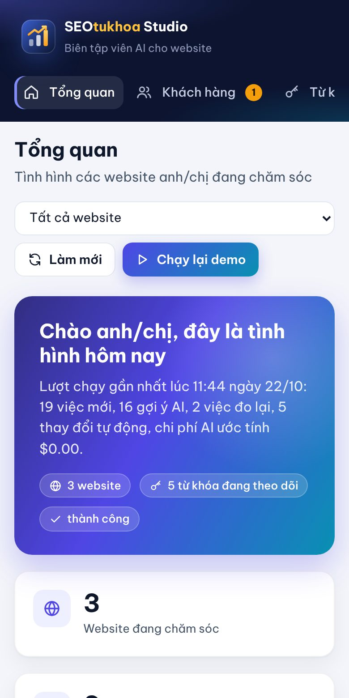

Anh/chị chỉ cần gửi tên miền, link Fanpage và từ khóa. SEOtukhoa Studio đọc số liệu thật từ Google, tự tối ưu website an toàn, viết bài, đăng Fanpage và báo kết quả mỗi sáng. Không cần biết SEO.
✓ Không traffic ảo, không click giả · ✓ Mọi thay đổi đều có bản cũ để trả lại

Việc SEO lặp đi lặp lại (xem số liệu, tìm trang tụt hạng, sửa tiêu đề, viết bài, đăng Fanpage) được phần mềm làm mỗi đêm. Anh/chị chỉ xem kết quả.
Đọc trực tiếp Google Search Console, Google Analytics 4 và PageSpeed qua kết nối chính thức. Không đoán, không ước lượng.
AI viết 3 phương án cho mỗi chỗ cần sửa, một AI thứ hai chấm điểm. Chỉ phương án đạt từ 8/10 mới được áp dụng.
Lưu bản cũ trước mỗi thay đổi. Sau 28 ngày, nếu click giảm hơn 20%, phần mềm tự trả lại bản cũ.
Tìm hiểu trên web, lập dàn ý, viết, biên tập, soát thông tin. Bài đạt chuẩn mới được hẹn giờ đăng.
Lên lịch đăng Fanpage, chọn video hợp chủ đề, cắt clip dọc cho Reels/Shorts, đo lượt xem và lượt vào website.
Tin Telegram tóm tắt việc đã làm, kết quả đo lại và những gì cần anh/chị chú ý. Xem chi tiết trên giao diện.
Từ đọc số liệu đến đo lại kết quả, tự động từ đầu đến cuối.

Từ phân tích, tối ưu, nội dung đến mạng xã hội và AI tìm kiếm.
Mỗi mục một việc, chữ tiếng Việt dễ hiểu, màu sắc cho biết ngay việc nào tốt, việc nào cần chú ý.




Không cần biết lập trình, không cần sửa cài đặt phức tạp.
| Anh/chị muốn | Làm thế nào |
|---|---|
| Thêm khách hoặc website mới | Mục Khách hàng → điền 3 ô → bấm Thêm khách |
| Thêm hoặc đổi từ khóa | Thêm một dòng ở trang Từ khóa trong Google Sheet |
| Không cho sửa một trang | Ghi đường dẫn trang vào cột Trang không tự sửa |
| Muốn tự duyệt trước khi sửa | Ghi không ở cột Tự động hoàn toàn của website đó |
| Chạy ngay, không chờ tới đêm | Bấm Chạy ngay trên giao diện |
| Xem AI đã sửa gì | Mục AI đã làm: có bản trước, bản sau, điểm chấm |

Việc nào không chắc, phần mềm không làm. Mọi thay đổi đều minh bạch và trả lại được.
Hai tuần đầu chỉ ghi lại việc sẽ làm, chưa sửa thật, chưa tự đăng bài.
Tối đa 5 trang mỗi ngày. Một trang đã sửa phải chờ 28 ngày mới sửa tiếp.
Không sửa nội dung chính, giá, thông tin pháp lý, đường dẫn, không xóa trang. Trang chủ và trang bán hàng chính để người làm.
Lưu bản cũ trước mỗi lần sửa. Click giảm hơn 20% sau 28 ngày thì tự trả lại.
Y tế, thuốc, pháp luật, đầu tư, vay, bảo hiểm, thuế: bài luôn để nháp cho người có chuyên môn đọc.
Bài chỉ dùng thông tin có thật của doanh nghiệp. Thiếu thông tin hoặc nghi sai thì không đăng.
Không click giả, không proxy, không tài khoản ảo, không đăng vào nhóm Facebook. Chỉ dùng kết nối chính thức.
Mỗi thay đổi đều được báo qua Telegram và ghi lại đầy đủ để kiểm tra.
Ngành y tế, tài chính, pháp luật vẫn dùng được đầy đủ phần theo dõi và tối ưu; riêng bài viết luôn để nháp cho người có chuyên môn đọc trước khi đăng.
Người mới cũng làm được. Mất khoảng 10 phút, chỉ làm một lần.
Tên miền website, link Fanpage Facebook và các từ khóa muốn lên top Google.
Làm theo tin nhắn soạn sẵn, khoảng 5 phút: Search Console, WordPress, Fanpage. Hướng dẫn chi tiết ở phần bên dưới.
Phần mềm tự chạy mỗi đêm. Anh/chị đọc tin Telegram hoặc mở giao diện để xem kết quả.
Nhắn Zalo [số Zalo] hoặc gọi [số điện thoại] để được tư vấn và cài đặt.
Phần A dành cho khách hàng (chủ website). Phần B dành cho người vận hành phần mềm.
Google và Facebook bắt buộc chủ website tự bấm cấp quyền, để không ai lấy được tài khoản của anh/chị. Anh/chị có thể thu hồi quyền bất cứ lúc nào.
Phần mềm chạy trên một máy tính Windows, mỗi đêm tự làm việc. Người mới làm theo thứ tự dưới đây.
Mỗi việc trên giao diện có một nhãn màu. Xanh là tốt, vàng là đang chờ, đỏ là cần xem.
| Trạng thái | Nghĩa là |
|---|---|
| Mới | Khách vừa thêm, phần mềm sẽ xử lý trong lượt chạy kế tiếp. |
| Chờ cấp quyền | Đang chờ khách cấp quyền. Tin nhắn hướng dẫn đã soạn sẵn. |
| Đang chạy | Đủ quyền, phần mềm làm việc mỗi đêm. |
| Chạy thử | Trong 14 ngày đầu: chỉ ghi lại việc sẽ làm, chưa sửa thật. |
| Đã sửa | AI đã sửa trên website, đang chờ đủ 28 ngày để đo kết quả. |
| Giữ lại | Đo sau 28 ngày thấy tốt, giữ thay đổi. |
| Đã hoàn tác | Click giảm hơn 20%, phần mềm đã tự trả lại bản cũ. |
| Không chắc nên không sửa | AI chưa đủ chắc chắn nên bỏ qua. Đây là chốt an toàn, không phải lỗi. |
| Chờ viết | Bài trong kế hoạch. Nếu có ghi chú “chờ: ...” là chưa đủ điều kiện, phần mềm tự thử lại các đêm sau. |
| Đã có nháp | Bài đã viết nhưng để nháp; cột ghi chú nêu lý do (chạy thử, chủ đề nhạy cảm, thiếu thông tin...). |
| Đã hẹn đăng | Bài đạt mọi kiểm tra, đã hẹn giờ tự đăng trên website. |
| Cần người kiểm tra | Có việc phần mềm không tự xử lý được (ví dụ không đo được kết quả quá lâu). |